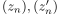
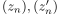
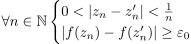
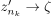
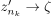
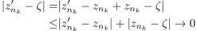
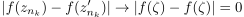
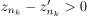
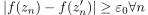
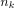

Gleichmäßige Stetigkeit einer stetigen Funktion von einer Kompakten Menge
1. Satz
Sei  eine stetige Funktion auf zwei metrischen Räumen und
eine stetige Funktion auf zwei metrischen Räumen und  zusätzlich ein folgenkompakte Menge
Dann ist
zusätzlich ein folgenkompakte Menge
Dann ist  gleichmäßig stetig
gleichmäßig stetig
2. Beweis
Beweis durch Widerspruch
Angenommen ist nicht gleichmäßig stetig, so folgt, dass ein  existiert, so dass gilt:
Es existieren zwei Folgen  in , so dass gilt
existiert, so dass gilt:
Es existieren zwei Folgen  in , so dass gilt

1
Aus der Folgenkompaktheit gilt, dass eine Teilfolge mit  existiert.
Zudem konvergiert  wegen:
Wegen der Dreiecksungleichung gilt:
existiert.
Zudem konvergiert  wegen:
Wegen der Dreiecksungleichung gilt:

2
und aufgrund der Folgenstetigkeit gilt:

3
trotz  was ein Widerspruch ist zur Annahme

4
und damit auch für alle 